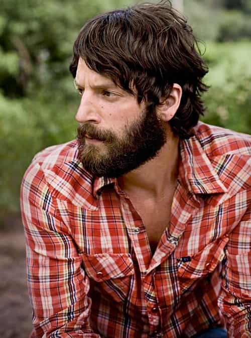
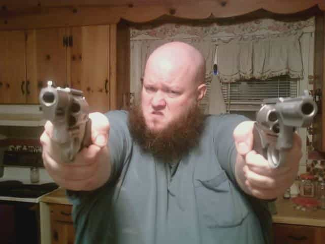
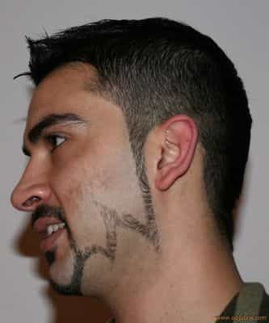
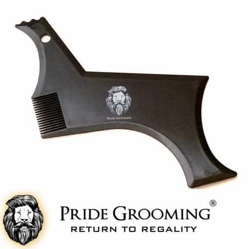
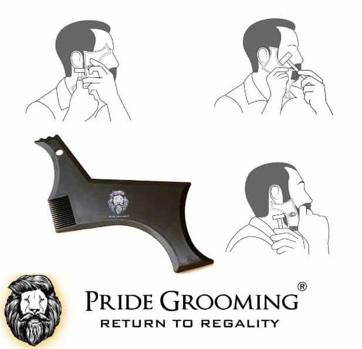

Sponsored Article is ROK's official account that publishes sponsored articles from advertisers. If you are interested hiring a sponsored article for your site, product, or service, visit our advertising page.


Growing a beard is one of the easiest ways to make yourself more attractive to women. Beards are a quintessential aspects of physical masculinity: a lush carpet of hair on your face will make you stand out from clean-shaved men and give you an advantage in the mating dance. However, there’s a right way and a wrong way to maintain a beard, and if you do it wrong, you’ll look like a dork instead of like a man. Here’s how to maintain your beard the right way…
Many men make the mistake of trying to sculpt their beard before it’s fully grown out. This is a major error. It takes time for a beard to reach a length where sculpting it is possible, and doing it too soon will make you look awkward and weird. Think of your beard as a canvass: it needs to be treated gingerly if you want to develop it. To spare yourself these problems, grow your beard out for at least two months before you begin shaping it.
This is the second stage of beard maintenance. Beards that are thick and dense look more masculine and powerful, so you want to keep your beard as orderly and neat as possible. The thicker the beard, the better: thin beards make you look weak and project vulnerability instead of strength, hurting your attractiveness to women.

Because hairs grow at different rates, you’ll want to trim runaway hairs at the bottom that are growing too quickly in order to give the appearance that your beard is as thick as possible. Do this on a regular basis.
The absolute last thing you want is a neckbeard. Men with neckbeards get mocked on the Internet for a reason: they’re gross, messy, and make you look like a homeless person. If you grow a neckbeard, you might as well just forget about women and buy yourself a fedora and a lifetime supply of Cheetos.


To avoid looking like a euphoric atheist, regularly shave your neck and upper cheeks so that your beard looks neat. You’ll want to walk a line between being too fussy and being too lax. Try and make it so that you don’t look like you’re trimming your beard every day even when you are. You want your beard to look as effortless as possible, like it just magically sprouted from your face in an organized pattern and maintains an even length.
Scientific studies have shown that people with symmetrical facial features are considered more attractive. This goes for beards as well: asymmetrical beards look weird and off-putting. To this end, you’ll want to keep your beard as symmetrical as possible. This can be somewhat difficult with traditional beard grooming products, as these pictures show…


The best way to keep your beard symmetrical and fresh is to use professional beard trimming product, such as Pride Grooming’s Beard Shaping Tool.

Traditional methods of cutting and trimming beards, such as scissors or beards, are risky and inefficient. You’ll want to use the Beard Shaping Tool because it allows you to expertly sculpt your neckline, cheekline, and jawline with the precision of a professional barber. Indeed, both amateur beard owners and barbers can make use of the Beard Shaping Tool in their work.

The Beard Shaping Tool is so versatile that it can even be used to shape your sideburns and forehead/temple lines. To help you out with the process of trimming, the tool also includes symmetry lines to guide your grooming.
The men who’ve purchased the Beard Shaping Tool are happy to have found a product that makes beard grooming an absolute cinch. By using this tool, you can make the process of maintaining your beard painless and easy, and also make yourself more attractive to girls. Enter the code “ROK” at checkout for any Pride Grooming order to receive a 10% discount.
If you’re going to grow a beard, you need to do it right. Indeed, if you don’t do it right, you might as well not even do it at all. By following these beard maintenance tips and investing in a professional Beard Shaping Tool, you can make the process of having a beard pain-free and easy, and also increase your attractiveness to women while you’re at it. Click here to visit the Pride Grooming Store.
Advertise Your Product Or Site On Return Of Kings